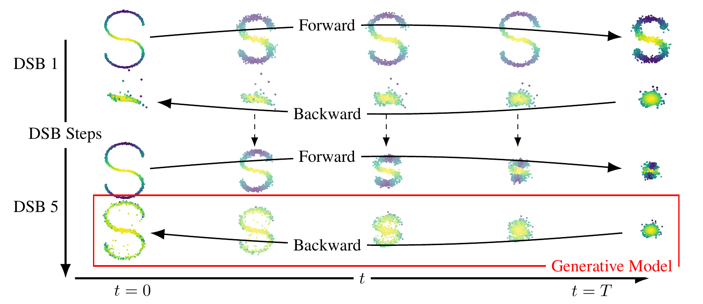
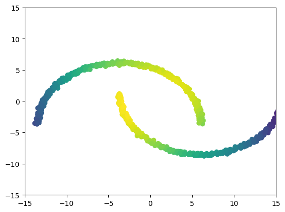

Schrodinger bridge
What is a Schrödinger Bridge?
The Schrödinger Bridge (SB) problem is a classical problem appearing in applied mathematics, optimal control and probability; see [1, 2, 3]. In the discrete-time setting, it takes the following (dynamic) form. Consider as reference density $p(x_{0:N})$ describing the process adding noise to the data. We aim to find $p^*(x_{0:N})$ such that $p^*(x_0) = p_{\mathrm{data}}(x_0)$ and $p^*(x_N) = p_{\mathrm{prior}}(x_N)$ and minimize the Kullback-Leibler divergence between $p^*$ and $p$. In this work we introduce Diffusion Schrodinger Bridge (DSB), a new algorithm which uses score-matching approaches [4] to approximate the Iterative Proportional Fitting algorithm, an iterative method to find the solutions of the SB problem. DSB can be seen as a refinement of existing score-based generative modeling methods [5, 6]. Two dimensional examples





MNIST

References
[1] Hans Föllmer Random fields and diffusion processes In: École d'été de Probabilités de Saint-Flour 1985-1987
[2] Christian Léonard A survey of the Schrödinger problem and some of its connections with optimal transport In: Discrete & Continuous Dynamical Systems-A 2014
[3] Yongxin Chen, Tryphon Georgiou and Michele Pavon Optimal Transport in Systems and Control In: Annual Review of Control, Robotics, and Autonomous Systems 2020
[4] Aapo Hyvärinen and Peter Dayan Estimation of non-normalized statistical models by score matching In: Journal of Machine Learning Research 2005
[5] Yang Song and Stefano Ermon Generative modeling by estimating gradients of the data distribution In: Advances in Neural Information Processing Systems 2019
[6] Jonathan Ho, Ajay Jain and Pieter Abbeel Denoising diffusion probabilistic models In: Advances in Neural Information Processing Systems 2020